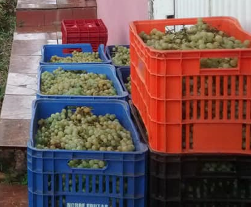

Conheça o ciclo do cultivo da uva americana e europeia .

Por Amanda Bombana Pasa em 20/06/2024.
Existem várias espécies de uvas cultivadas para diferentes propósitos, como consumo direto e produção de vinhos.
Vitis vinifera é uma uva europeia, amplamente utilizada na produção de vinhos.
Vitis labrusca é uma uva americana, utilizada no consumo in natura e produção de sucos de uva.
A melhor época para o plantio é no final do inverno ao início da primavera, em lua crescente.
A colheita deve ser no final do verão ao início do outono entre setembro e outubro.
Para garantir um desenvolvimento saudável ela precisa de boa poda, fertilização adequada, irrigação regular e controle de pragas/doenças.